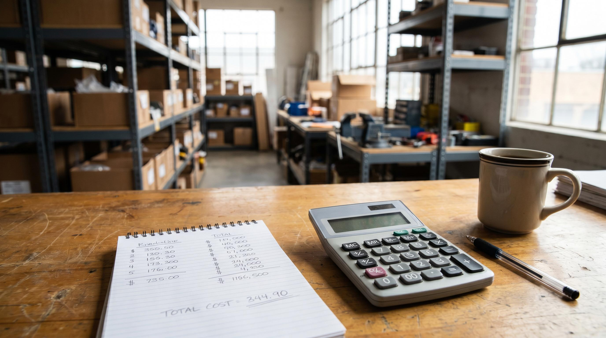

De fleste webshops kender deres fragtpris pr. pakke. Faerre kender lageromkostningen pr. ordre, hvad det faktisk koster at plukke, pakke og goere en ordre klar til forsendelse.
Det er et problem, fordi lageromkostningen pr. ordre er det tal der bedst afslorer om dit lager er effektivt. Og det er det tal du skal bruge, naar du vil argumentere for investering i bedre processer eller nyt udstyr.
Her er formlen, hvad du inkluderer, og hvad der er et godt tal.
👉 SmartPack beregner automatisk din lageromkostning pr. ordre i realtid. Se systemet
Formlen
Lageromkostning pr. ordre (LPO) = samlede lageromkostninger i perioden / antal ekspederede ordrer i perioden.
Det lyder enkelt. Tricket er at vide hvad der hoerer med i "samlede lageromkostninger".
Hvad du inkluderer
Her er de fem omkostningsposter der hoerer med:
- Loen til lagermedarbejdere inkl. overhead. Tag bruttoloenen og gang med 1,35 (arbejdsgiverbidrag, ferie, sygeforsikring osv.). Hvis en medarbejder koster 30.000 kr./maaned brutto, er den reelle lageromkostning til den person ca. 40.500 kr./maaned.
- Andel af lagerhusleje. Tag din samlede lagerhusleje og divider med det antal ordrer du ekspederer. Hvis du lejer 300 kvm for 25.000 kr./maaned og sender 2.000 ordrer, er lejeomkostningen 12,50 kr./ordre.
- Emballage. Kasser, tape, bobbelfolie, papirfyld, labels. Regn pr. ordre. For en typisk B2C-webshop er emballageomkostningen 8-25 kr./ordre.
- WMS og systemabonnementer. Dit WMS, eventuelle scan-systemer, printere og abonnementer fordelt paa ordrer. SmartPacks abonnement er typisk 2-8 kr./ordre ved normal volumen.
- Fejlomkostninger. En andel af dine fejlleveringsomkostninger hoerer med her. Beregn gennemsnitlig fejlomkostning (se artiklen om hvad en fejllevering koster) og gang med din fejlrate.
Fragt holdes separat. Fragt er en separat metric fordi den paavikres af faktorer du ikke kontrollerer paa samme maade (vaegt, destination, leverandoertakster).
Et eksempel
Lad os sige du sender 2.000 ordrer om maaneden med 2 lagermedarbejdere:
| Omkostningspost | Maaned | Pr. ordre |
|---|---|---|
| Loen x2 (inkl. overhead) | 81.000 kr. | 40,50 kr. |
| Lagerhusleje | 20.000 kr. | 10,00 kr. |
| Emballage | 24.000 kr. | 12,00 kr. |
| WMS og systemer | 8.000 kr. | 4,00 kr. |
| Fejlomkostninger (1%) | 6.000 kr. | 3,00 kr. |
| Total | 139.000 kr. | 69,50 kr. |
69,50 kr. pr. ordre er hoejt for en webshop med 2.000 ordrer/maaned. Typisk niveau er 25-40 kr. Aarsagen er som oftest loenprocenten, som driver store dele af omkostningen.
Benchmarks pr. ordrevolumen
| Ordrer/maaned | Uden WMS | Med WMS |
|---|---|---|
| 500-1.000 | 50-90 kr. | 30-55 kr. |
| 1.000-5.000 | 35-65 kr. | 18-38 kr. |
| 5.000+ | 25-50 kr. | 10-28 kr. |
Hvad der driver lageromkostningen op
De storste syndere:
- Ineffektive plukkeruter. Plukkere der korer kryds og tvaers bruger 30-50% mere tid end noedvendigt.
- Ingen batch picking. En plukker der haandterer een ordre ad gangen er markant langsommere end een der haandterer 5-10 ad gangen.
- Hoj fejlrate. Hver fejl koster 2-3x den normale ordre at haandtere.
- Emballagespild. Kasser der er for store og fyldmateriale der bruges for liberalt.
Saadan maaer og reducerer du det i SmartPack
SmartPack registrerer automatisk picks pr. time, plukketid og pakketid pr. ordre. Du kan se din effektive lageromkostning pr. ordre fordelt paa medarbejder, varekategori og periode.
Maed det maanedligt. Saet et maal. De fleste SmartPack-kunder reducerer lageromkostning pr. ordre med 25-40% inden for de foerste 3 maaneder ved at kombinere TSM-plukkeruter, batch picking og scan-baseret plukning.